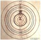

電子相簿
kosmos1.jpg
25.22 KB
sun.gif
37.31 KB
大霹靂後之宇宙.gif
40.72 KB
銀河.gif
68.55 KB
250px哈柏望遠鏡所拍攝之宇宙.jpg
27.30 KB
das universum.jpg
27.28 KB

Kosmos_ptolm.jpg
37.12 KB
克普勒行星模型.jpg
28.92 KB
宇宙中最遠的星系.jpg
27.30 KB
宇宙學年代表.jpg
50.17 KB
宏偉的闊邊帽星系.jpg
19.91 KB
恆星的生命周期 .jpg
22.31 KB
愛斯基摩星雲 .jpg
13.76 KB
成長的瞬間.jpg
14.85 KB
深藍色的太陽.jpg
20.83 KB
空間現象模仿藝術.jpg
19.65 KB
美麗的宇宙.jpg
37.35 KB
貓眼星雲.jpg
10.07 KB